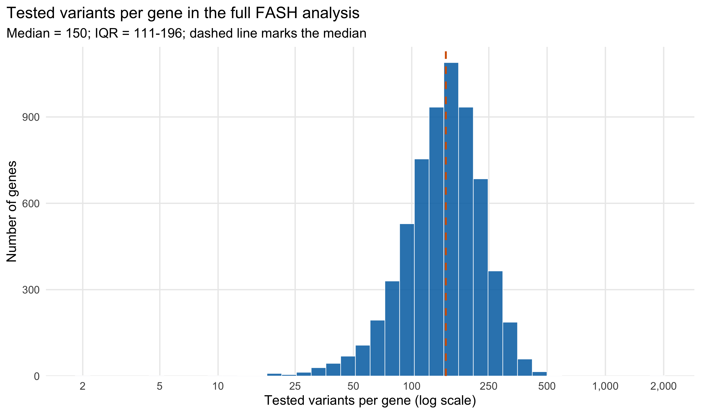
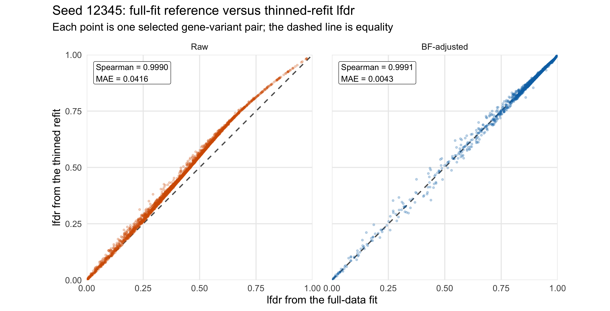
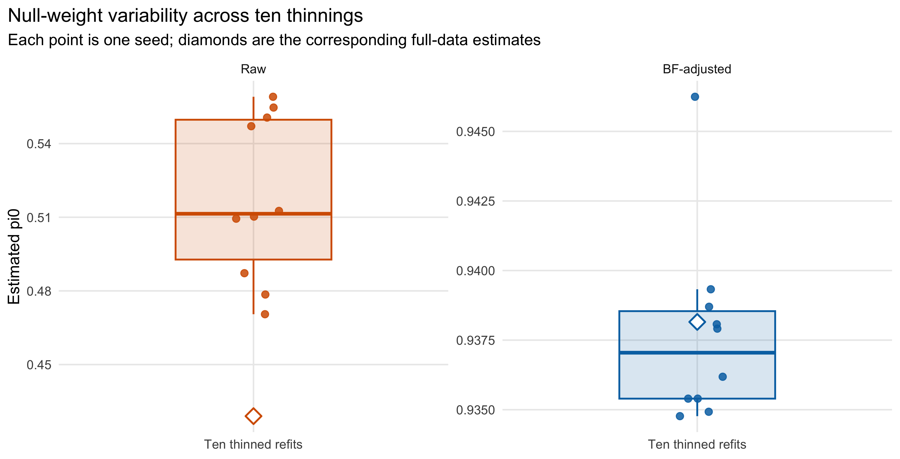
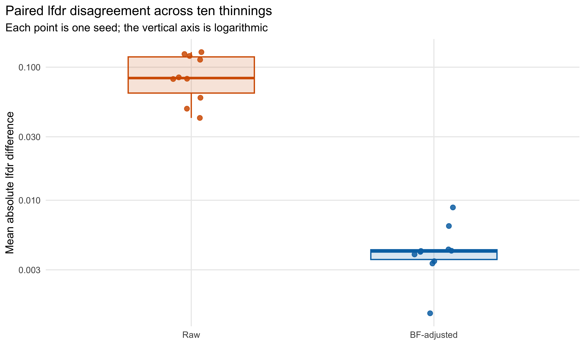
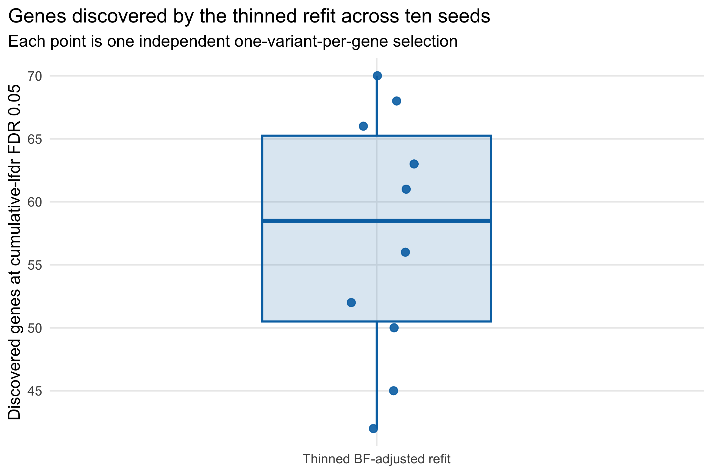
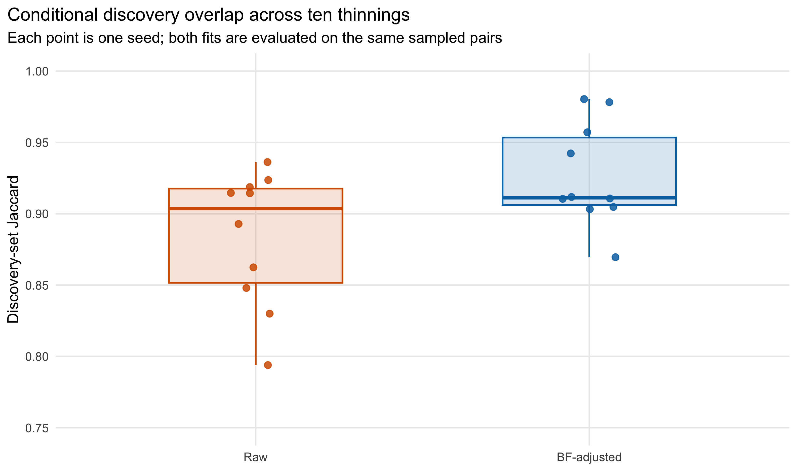

Last updated: 2026-08-07
Checks: 6 1
Knit directory: coderepo-local/
This reproducible R Markdown analysis was created with workflowr (version 1.7.2). The Checks tab describes the reproducibility checks that were applied when the results were created. The Past versions tab lists the development history.
The R Markdown is untracked by Git. To know which version of the R
Markdown file created these results, you’ll want to first commit it to
the Git repo. If you’re still working on the analysis, you can ignore
this warning. When you’re finished, you can run
wflow_publish to commit the R Markdown file and build the
HTML.
Great job! The global environment was empty. Objects defined in the global environment can affect the analysis in your R Markdown file in unknown ways. For reproduciblity it’s best to always run the code in an empty environment.
The command set.seed(20251109) was run prior to running
the code in the R Markdown file. Setting a seed ensures that any results
that rely on randomness, e.g. subsampling or permutations, are
reproducible.
Great job! Recording the operating system, R version, and package versions is critical for reproducibility.
Nice! There were no cached chunks for this analysis, so you can be confident that you successfully produced the results during this run.
Great job! Using relative paths to the files within your workflowr project makes it easier to run your code on other machines.
Great! You are using Git for version control. Tracking code development and connecting the code version to the results is critical for reproducibility.
The results in this page were generated with repository version 9fbd863. See the Past versions tab to see a history of the changes made to the R Markdown and HTML files.
Note that you need to be careful to ensure that all relevant files for
the analysis have been committed to Git prior to generating the results
(you can use wflow_publish or
wflow_git_commit). workflowr only checks the R Markdown
file, but you know if there are other scripts or data files that it
depends on. Below is the status of the Git repository when the results
were generated:
Ignored files:
Ignored: .DS_Store
Ignored: .Rhistory
Ignored: .Rproj.user/
Ignored: analysis/.DS_Store
Ignored: analysis/.Rhistory
Ignored: analysis/site_libs/
Ignored: code/.DS_Store
Ignored: code/.Rhistory
Ignored: data/appendixB/
Ignored: data/dynamic_eQTL_real/
Ignored: data/toy_example/
Ignored: output/dynamic_eQTL_real/
Ignored: output/pdf/
Ignored: output/revision_simulations/
Untracked files:
Untracked: Rplots.pdf
Untracked: analysis/revision_combined_spiky_genotype_simulation.rmd
Untracked: analysis/revision_correlated_error_simulation.rmd
Untracked: analysis/revision_functional_testing_simulation.rmd
Untracked: analysis/revision_genotype_level_simulation.rmd
Untracked: analysis/revision_internal_observational_null_set_pilot.rmd
Untracked: analysis/revision_internal_one_variant_per_gene_refit.rmd
Untracked: analysis/revision_internal_real_genotype_simulation.rmd
Untracked: analysis/revision_internal_targeted_broad_calibration.rmd
Untracked: analysis/revision_internal_zero_intercept_correlation.rmd
Untracked: analysis/revision_ld_tagging_switch_example.rmd
Untracked: code/00_eQTLs_CL.R
Untracked: code/01_fash_CL.R
Untracked: code/01_fash_CL.sbatch
Untracked: code/09_penalty_sensitivity.R
Untracked: code/09_penalty_sensitivity.sbatch
Untracked: code/revision_simulations/
Untracked: fash_prior_comparison_order1_after.pdf
Untracked: fash_prior_comparison_order1_after.png
Untracked: fash_prior_comparison_order1_before.pdf
Untracked: fash_prior_comparison_order1_before.png
Untracked: fash_prior_comparison_order2_after.pdf
Untracked: fash_prior_comparison_order2_after.png
Untracked: fash_prior_comparison_order2_before.pdf
Untracked: fash_prior_comparison_order2_before.png
Unstaged changes:
Modified: .gitignore
Modified: analysis/dynamic_eQTL_real.rmd
Modified: analysis/index.Rmd
Modified: analysis/nonlinear_dynamic_eQTL_real.Rmd
Modified: code/README.md
Modified: output/toy_example/toy_example_11.pdf
Modified: output/toy_example/toy_example_12.pdf
Modified: output/toy_example/toy_example_21.pdf
Modified: output/toy_example/toy_example_22.pdf
Note that any generated files, e.g. HTML, png, CSS, etc., are not included in this status report because it is ok for generated content to have uncommitted changes.
There are no past versions. Publish this analysis with
wflow_publish() to start tracking its development.
The full FASH(1) analysis contains 1,009,173 tested gene-variant pairs from 6,362 genes. A gene with many tested cis variants therefore contributes more units to the empirical-Bayes fit than a gene with few tested variants. Nearby variants for the same gene can also be in linkage disequilibrium (LD).
The primary sensitivity analysis uniformly samples one tested variant per gene and refits FASH on the resulting 6,362 units. It asks whether the fitted prior, selected-unit lfdr values, and discoveries depend strongly on the repeated representation of genes in the full pair-level data.
Main result. The raw FASH fit retains almost the same ranking but changes in absolute prior and lfdr calibration. After the paper’s BF prior update, the thinned fits remain close to the full-data fit across all ten random selections: estimated null weights are 0.9348–0.9462, paired lfdr mean absolute differences are 0.0014–0.0088, and lfdr Spearman correlations are 0.9978–0.9998. The complete full-data fit has one fixed result–1,177 genes with discovered dynamic eQTLs–whereas the ten independently thinned refits discover 42–70 genes each.
The experiment uses the current raw and BF-adjusted FASH(1) objects without simulating new beta estimates or standard errors.
render_scrollable_table(
design_table,
align = "ll",
minimum_width = "680px"
)| Quantity | Value |
|---|---|
| Full gene-variant pairs | 1,009,173 |
| Unique genes | 6,362 |
| Pairs retained per thinning | 6,362 |
| Random thinning seeds | 12345, 22345, 32345, 42345, 52345, 62345, 72345, 82345, 92345, 102345 |
| FASH order | 1 |
| PSD grid points | 52 |
| Raw EB penalty | 10 (fixed to the original analysis) |
| BF update | Applied after every raw refit |
| Comparison alpha | 0.05 |
The full analysis does not contribute the same number of units per gene. The distribution below is computed directly from the full fit’s pair keys. A gene has a median of 150 tested variants (IQR 111–196), with a range of 2–1,859.
render_scrollable_table(
variant_count_summary_table,
align = "lr",
minimum_width = "620px"
)| Statistic | Tested variants per gene |
|---|---|
| Minimum | 2 |
| Q1 | 111 |
| Median | 150 |
| Mean | 158.6 |
| Q3 | 196 |
| Maximum | 1,859 |
plot_variants_per_gene_histogram()
Distribution of the number of tested variants contributed by each gene to the full FASH analysis. The horizontal axis is logarithmic so that both the main distribution and the long right tail remain visible.
The logarithmic horizontal axis changes only the display, not the counts. This unequal full-data representation is exactly what the one-per-gene thinning removes.
For each deterministic seed, all pair keys are split by Ensembl gene ID and one index is sampled uniformly within every gene. The draw is independent of the observed beta estimates, standard errors, lfdr values, and significance.
pair_keys <- names(fash_fit1$fash_data$data_list)
gene_id <- sub("_.*$", "", pair_keys)
gene_index <- split(
seq_along(pair_keys),
factor(gene_id, levels = sort(unique(gene_id)))
)
set.seed(12345)
selected_indices <- vapply(
gene_index,
function(indices) {
if (length(indices) == 1L) indices else sample(indices, size = 1L)
},
integer(1)
)This changes the empirical target as well as reducing repeated variants per gene:
It is therefore a sensitivity analysis of the complete unit-composition change, not an estimator of an LD-only effect.
Every seed retains exactly one unique gene-variant pair per gene. The selected sets contain 6,333–6,351 unique source variant IDs. A small number of variants are assigned to two different genes, producing 11–29 repeated cross-gene assignments per seed.
render_scrollable_table(
selection_audit,
align = "rrrrrr",
minimum_width = "1040px"
)| Seed | Gene-variant pairs | Unique genes | Unique source variants | Repeated cross-gene assignments | Maximum genes per variant |
|---|---|---|---|---|---|
| 12345 | 6362 | 6362 | 6345 | 17 | 2 |
| 22345 | 6362 | 6362 | 6342 | 20 | 2 |
| 32345 | 6362 | 6362 | 6338 | 24 | 2 |
| 42345 | 6362 | 6362 | 6333 | 29 | 2 |
| 52345 | 6362 | 6362 | 6338 | 24 | 2 |
| 62345 | 6362 | 6362 | 6345 | 17 | 2 |
| 72345 | 6362 | 6362 | 6344 | 18 | 2 |
| 82345 | 6362 | 6362 | 6351 | 11 | 2 |
| 92345 | 6362 | 6362 | 6340 | 22 | 3 |
| 102345 | 6362 | 6362 | 6338 | 24 | 3 |
Thus the design removes multiple tested variants within each gene, but it does not force globally unique SNP IDs and does not remove LD between nearby variants assigned to different genes.
For unit \(j\) and PSD-grid
component \(k\), let \(L_{jk}\) be the likelihood stored in the
full FASH object’s L_matrix. At fixed beta estimates,
standard errors, basis, likelihood, and PSD grid, the data-likelihood
part of the empirical-Bayes objective is
\[ \ell(\pi) = \sum_{j=1}^{J} \log\left\{ \sum_{k=1}^{K}\pi_k L_{jk} \right\}. \]
Each row of \(L\) is computed independently before the mixture weights are estimated. Consequently, thinning the units requires selecting the matching likelihood rows and reoptimizing \(\pi\); it does not require recomputing the same 52 likelihood values from beta and SE for every selected unit.
selected_L <- fash_fit1$L_matrix[selected_indices, , drop = FALSE]
eb_result <- fashr::fash_eb_est(
L_matrix = selected_L,
grid = fash_fit1$psd_grid,
penalty = fash_fit1$settings$penalty
)
thinned_raw <- refit_fash_from_cached_likelihood(
fash_fit1,
selected_indices
)
thinned_bf <- fashr::BF_update(thinned_raw, plot = FALSE)This is a genuine refit: the thinned mixture weights, posterior weights, and lfdr values are re-estimated. Only the fixed per-unit likelihood calculations are reused.
All raw fits use the original analysis choice
penalty = 10; this setting is held fixed throughout the
sensitivity analysis.
The full raw fit estimates \(\widehat\pi_0= 0.4290\). After thinning, the raw estimate rises to 0.4705–0.5591. Its paired lfdr ranking remains extremely stable, but its absolute lfdr mean absolute difference reaches 0.1298.
The full BF-adjusted fit estimates \(\widehat\pi_0= 0.9382\). The ten thinned BF-adjusted estimates are 0.9348–0.9462, a change of only -0.0034–+0.0081.
render_scrollable_table(
fit_range_table,
align = "lrrrrrrrl",
minimum_width = "1660px"
)| Fit | Full pi0 | Thinned pi0 range | Delta pi0 range | Prior TV range | lfdr Spearman range | lfdr MAE range | Discovery Jaccard range | Interpretation |
|---|---|---|---|---|---|---|---|---|
| Raw | 0.4290 | 0.4705–0.5591 | +0.0415–+0.1301 | 0.2923–0.5655 | 0.9974–0.9997 | 0.0416–0.1298 | 0.7939–0.9363 | Ranks are stable, but absolute calibration changes. |
| BF-adjusted | 0.9382 | 0.9348–0.9462 | -0.0034–+0.0081 | 0.0312–0.0541 | 0.9978–0.9998 | 0.0014–0.0088 | 0.8696–0.9804 | Null weight, lfdr values, and calls are practically stable. |
The scatter plot below shows every selected pair for the first prespecified seed. The horizontal coordinate is the lfdr assigned by the fixed full-data fit; the vertical coordinate is the lfdr after re-estimating the mixture on the 6,362 selected pairs. Thus, both axes refer to exactly the same gene-variant pairs.
render_scrollable_table(
specific_seed_table,
align = "lrrrrrrr",
minimum_width = "1260px"
)| Fit | Full pi0 | Thinned pi0 | lfdr Spearman | lfdr MAE | Reference calls on sampled pairs | Thinned-refit calls | Discovery Jaccard |
|---|---|---|---|---|---|---|---|
| Raw | 0.4290 | 0.4705 | 0.9990 | 0.0416 | 250 | 236 | 0.9363 |
| BF-adjusted | 0.9382 | 0.9349 | 0.9991 | 0.0043 | 46 | 45 | 0.9783 |
plot_specific_seed_lfdr()
Seed 12345 lfdr values from the fixed full-data fit and thinned refit. Each facet uses the identical 6,362 selected gene-variant pairs.
The raw points show a calibration shift despite a nearly unchanged ordering. The BF-adjusted points lie much closer to the equality line.
plot_pi0_stability()
Distribution of thinned null-weight estimates across ten seeds. Each point is one seed; diamonds mark the corresponding fixed full-data estimates.
The boxplots summarize cross-seed variability rather than connecting arbitrary seed labels. The raw estimates move upward under gene weighting and vary more across representative variants. The BF-adjusted estimates remain tightly centered around the full-data reference.
plot_lfdr_mae()
Distribution across ten seeds of the mean absolute lfdr difference between the full-fit reference and thinned refit on the same sampled pairs.
The logarithmic axis emphasizes the separation: BF-adjusted lfdr mean absolute differences remain below 0.009 in every seed, compared with 0.0416–0.1298 for the raw fit.
In the complete BF-adjusted analysis, cumulative-lfdr FDR control at 0.05 discovers 9,205 gene-variant pairs from 1,177 distinct genes. This is one fixed full-data result; it has no thinning seed and does not vary across the ten refits.
render_scrollable_table(
full_data_discovery_table,
align = "lrrrr",
minimum_width = "1040px"
)| Fit | Tested gene-variant pairs | Tested genes | Discovered gene-variant pairs | Genes with at least one discovered dynamic eQTL |
|---|---|---|---|---|
| Full-data BF-adjusted FASH(1) | 1,009,173 | 6,362 | 9,205 | 1,177 |
Each thinned refit instead tests exactly 6,362 sampled pairs, one per gene. Therefore every discovered pair in a thinned fit corresponds to one discovered gene. Its discovery count can vary because a different representative variant is sampled for each gene and the FASH prior is then refitted on that selected dataset.
render_scrollable_table(
thinned_gene_discovery_table,
align = "rr",
minimum_width = "720px"
)| Seed | Genes discovered by the thinned BF-adjusted refit |
|---|---|
| 12345 | 45 |
| 22345 | 56 |
| 32345 | 68 |
| 42345 | 61 |
| 52345 | 42 |
| 62345 | 52 |
| 72345 | 66 |
| 82345 | 70 |
| 92345 | 50 |
| 102345 | 63 |
plot_thinned_gene_discoveries()
Distribution of the number of genes discovered by the ten thinned BF-adjusted refits. Each point is one seed.
Across the ten thinned refits, the count ranges from 42 to 70 genes, with median 58.5 and interquartile range 50.5–65.2. The full-data count of 1,177 and the thinned counts should not be compared as though they used the same testing universe: the full analysis tests all 1,009,173 pairs, while each thinned analysis tests only one randomly selected pair per gene.
The lfdr and discovery-overlap diagnostics use a different, deliberately paired comparison. For each seed, the fixed full-data fit is evaluated only on that seed’s 6,362 sampled pairs, and cumulative-lfdr FDR control is reapplied within that restricted set. This produces a seed-dependent reference on the sampled pairs; it is not the number of genes discovered by the full FASH analysis. The corresponding thinned refit is evaluated on exactly the same pairs, so their Jaccard overlap is meaningful as a conditional robustness diagnostic.
plot_discovery_jaccard()
Distribution across ten seeds of the conditional discovery-set Jaccard. In each seed, both fits are evaluated on the same sampled pairs.
The BF-adjusted discovery Jaccard ranges from 0.8696 to 0.9804. The non-overlapping calls remain concentrated near the decision boundary.
render_scrollable_table(
seed_result_table,
align = "rlrrrrrr",
minimum_width = "1240px"
)| Seed | Fit | Full pi0 | Thinned pi0 | Delta pi0 | lfdr Spearman | lfdr MAE | Call Jaccard |
|---|---|---|---|---|---|---|---|
| 12345 | Raw | 0.4290 | 0.4705 | +0.0415 | 0.9990 | 0.0416 | 0.9363 |
| 12345 | BF-adjusted | 0.9382 | 0.9349 | -0.0032 | 0.9991 | 0.0043 | 0.9783 |
| 22345 | Raw | 0.4290 | 0.5591 | +0.1301 | 0.9986 | 0.1298 | 0.8300 |
| 22345 | BF-adjusted | 0.9382 | 0.9381 | -0.0001 | 0.9990 | 0.0064 | 0.9107 |
| 32345 | Raw | 0.4290 | 0.5506 | +0.1216 | 0.9990 | 0.1215 | 0.8624 |
| 32345 | BF-adjusted | 0.9382 | 0.9393 | +0.0012 | 0.9993 | 0.0042 | 0.9118 |
| 42345 | Raw | 0.4290 | 0.5547 | +0.1257 | 0.9985 | 0.1255 | 0.8480 |
| 42345 | BF-adjusted | 0.9382 | 0.9379 | -0.0002 | 0.9994 | 0.0035 | 0.9032 |
| 52345 | Raw | 0.4290 | 0.5471 | +0.1181 | 0.9997 | 0.1138 | 0.7939 |
| 52345 | BF-adjusted | 0.9382 | 0.9462 | +0.0081 | 0.9997 | 0.0088 | 0.8696 |
| 62345 | Raw | 0.4290 | 0.5094 | +0.0804 | 0.9991 | 0.0815 | 0.9146 |
| 62345 | BF-adjusted | 0.9382 | 0.9348 | -0.0034 | 0.9995 | 0.0041 | 0.9423 |
| 72345 | Raw | 0.4290 | 0.4872 | +0.0582 | 0.9996 | 0.0589 | 0.9236 |
| 72345 | BF-adjusted | 0.9382 | 0.9354 | -0.0028 | 0.9998 | 0.0039 | 0.9104 |
| 82345 | Raw | 0.4290 | 0.5103 | +0.0813 | 0.9987 | 0.0819 | 0.9144 |
| 82345 | BF-adjusted | 0.9382 | 0.9354 | -0.0028 | 0.9996 | 0.0033 | 0.9571 |
| 92345 | Raw | 0.4290 | 0.4785 | +0.0495 | 0.9994 | 0.0488 | 0.9187 |
| 92345 | BF-adjusted | 0.9382 | 0.9387 | +0.0005 | 0.9993 | 0.0014 | 0.9804 |
| 102345 | Raw | 0.4290 | 0.5126 | +0.0836 | 0.9974 | 0.0839 | 0.8929 |
| 102345 | BF-adjusted | 0.9382 | 0.9362 | -0.0020 | 0.9978 | 0.0042 | 0.9048 |
This experiment separates two aspects of similarity.
The strongest defensible conclusion is:
The paper’s BF-adjusted FASH(1) prior and selected-pair lfdr values are robust to heavy thinning from 1,009,173 gene-variant pairs to one uniformly selected pair per gene. The corresponding raw empirical-Bayes prior is less robust to this change in unit composition.
This supports the practical stability of the reported BF-adjusted fit. It does not establish that LD has no effect, because thinning also changes the gene-versus-pair weighting of the empirical distribution.
penalty = 10
choice are unchanged.The two full-fit files were treated as immutable. Their recorded sizes, modification times, and SHA-256 hashes are reported below and remained unchanged across the random refits. Routine page builds use only compact caches and do not open these large objects.
render_scrollable_table(
source_provenance_table,
align = "lllrl",
minimum_width = "1480px"
)| Artifact | File name | Size (MB) | Recorded mtime (UTC) | SHA-256 verified |
|---|---|---|---|---|
| Full raw FASH(1), penalty = 10 | fash_fit1_all.RData | 549.4 | 2026-01-20 17:57:38 UTC | 9e9aaf8a405f7ca83439990656666035fc0a74bb1ae2858ace79944fac6ec929 |
| Full BF-adjusted FASH(1) | fash_fit1_update.RData | 554.2 | 2026-01-20 20:29:11 UTC | 3e3d6735b9da734a3ab16ed53713908c02d0af4e15a659760fc5f892ef64023b |
Routine builds read:
output/revision_simulations/internal/one_variant_per_gene_refit_seed<seed>/
and the combined one_variant_per_gene_refit_seed_summary.csv,
plus one_variant_per_gene_full_bf_discovery_summary.csv
and one_variant_per_gene_variant_counts.csv.
They do not reload the full FASH objects or rerun the empirical-Bayes
fits.
To reproduce the analysis without overwriting the retained cache, use a new output prefix:
Rscript --vanilla \
code/revision_simulations/internal/one_variant_per_gene_refit/run_one_variant_per_gene_refit.R \
--seeds 12345,22345,32345,42345,52345,62345,72345,82345,92345,102345 \
--num-cores 8 \
--validation-units 24 \
--output-prefix one_variant_per_gene_refit_reproduction_seed \
--full-summary-file one_variant_per_gene_full_bf_discovery_summary_reproduction.csv \
--variant-count-file one_variant_per_gene_variant_counts_reproduction.csvThe focused computation and reporting tests are:
Rscript --vanilla \
code/revision_simulations/internal/one_variant_per_gene_refit/test_one_variant_per_gene_refit_helpers.R
Rscript --vanilla \
code/revision_simulations/internal/one_variant_per_gene_refit/test_reporting.RThe page can be rebuilt from the retained caches with:
Rscript --vanilla -e \
'workflowr::wflow_build(
"analysis/revision_internal_one_variant_per_gene_refit.rmd"
)'
sessionInfo()R version 4.5.1 (2025-06-13)
Platform: aarch64-apple-darwin20
Running under: macOS Sequoia 15.6.1
Matrix products: default
BLAS: /System/Library/Frameworks/Accelerate.framework/Versions/A/Frameworks/vecLib.framework/Versions/A/libBLAS.dylib
LAPACK: /Library/Frameworks/R.framework/Versions/4.5-arm64/Resources/lib/libRlapack.dylib; LAPACK version 3.12.1
locale:
[1] C.UTF-8/C.UTF-8/C.UTF-8/C/C.UTF-8/C.UTF-8
time zone: America/Chicago
tzcode source: internal
attached base packages:
[1] stats graphics grDevices utils datasets methods base
other attached packages:
[1] workflowr_1.7.2
loaded via a namespace (and not attached):
[1] gtable_0.3.6 jsonlite_2.0.0 dplyr_1.1.4 compiler_4.5.1
[5] promises_1.5.0 tidyselect_1.2.1 Rcpp_1.1.1-1.1 stringr_1.6.0
[9] git2r_0.36.2 dichromat_2.0-0.1 callr_3.7.6 later_1.4.4
[13] jquerylib_0.1.4 scales_1.4.0 yaml_2.3.12 fastmap_1.2.0
[17] ggplot2_4.0.1 R6_2.6.1 labeling_0.4.3 generics_0.1.4
[21] knitr_1.50 tibble_3.3.0 rprojroot_2.1.1 RColorBrewer_1.1-3
[25] bslib_0.9.0 pillar_1.11.1 rlang_1.2.0 cachem_1.1.0
[29] stringi_1.8.7 httpuv_1.6.16 xfun_0.55 S7_0.2.1
[33] getPass_0.2-4 fs_1.6.6 sass_0.4.10 otel_0.2.0
[37] cli_3.6.6 withr_3.0.2 magrittr_2.0.5 ps_1.9.1
[41] grid_4.5.1 digest_0.6.39 processx_3.8.6 rstudioapi_0.17.1
[45] lifecycle_1.0.5 vctrs_0.7.3 evaluate_1.0.5 glue_1.8.1
[49] farver_2.1.2 whisker_0.4.1 rmarkdown_2.30 httr_1.4.7
[53] tools_4.5.1 pkgconfig_2.0.3 htmltools_0.5.9